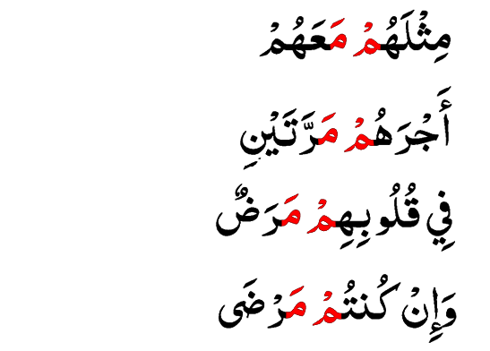

Idgham Mislain
Idgham Mislain terjadi apabila mim mati bertemu dengan huruf mim
Idgham Mislain ini memiliki beberapa nama.
Nama lain Idgham Mislain adalah:
- Idgham Mislain
- Idgham Syafawi
- Idgham Mimi
-
Cara membaca Idgham Mislain adalah dengan cara menyuarakan suara mim rangkap atau di tasydidkan dengan samar-samar dengan panjang 2 harakat.
-
Contoh-contoh Idhgam Syafawi atau Idgham Mislain
